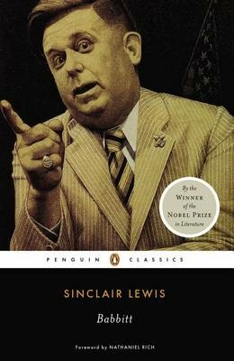
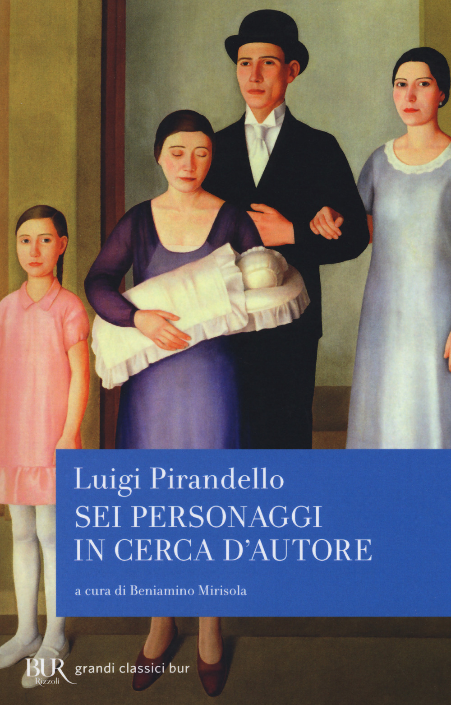

10:00 · 11 OPERE
L’eclissi dell’individuo e la scomparsa degli unicorni.
Il filo del discorso
La riflessione parte da Dilthey e dal rapporto fra individuo e legami sociali, per interrogare la perdita dell’autonomia personale. Dr Divago distingue la repressione esercitata dall’alto dalle forme di conformismo e di esclusione che operano nelle relazioni quotidiane. Una galleria di personaggi letterari, da Hans Castorp a Bartleby, dà figura all’estraneità dell’individuo rispetto al proprio tempo. Il rifiuto dello scrivano di Melville chiude il confronto fra obbedienza e possibilità di sottrarsi.
I libri nel discorso

L’essenza della filosofia
Note sul riferimento
Copertina: Rusconi · Testi a fronte · edizione di riferimento
Copertina autentica controllata visivamente. Edizione di riferimento; non identifica l’esemplare usato o citato nel video.
Titolo e autore annunciati prima del passo sull’individuo isolato.

Il mondo nuovo
Identificazione probabile
Note sul riferimento
Copertina della raccolta: Mondadori · Oscar Moderni · 2016
L’immagine mostra il volume Mondadori che riunisce Il mondo nuovo e Ritorno al mondo nuovo. Il collegamento nel video riguarda il primo romanzo, per allusione al titolo inglese; non identifica un’edizione usata dal relatore.
La formula inglese Brave New World richiama probabilmente Huxley; non viene annunciata una lettura del romanzo.

Divina Commedia
Note sul riferimento
Copertina: Giunti Barbera · Passepartout, 2021 · edizione di riferimento
Riferimento a Dante e agli ignavi nel terzo canto dell’Inferno.

La montagna magica
Identificazione probabile
Note sul riferimento
Copertina: Mondadori · Oscar Moderni Cult · 2026
Copertina autentica controllata visivamente. Edizione di riferimento; non identifica l’esemplare usato o citato nel video.
Hans Castorp e il sanatorio di Davos identificano probabilmente il romanzo; titolo non pronunciato.

Bartleby lo scrivano
Note sul riferimento
Copertina della raccolta: Bompiani · Bartleby lo scrivano e altri racconti · 2018
Copertina della raccolta Bompiani che contiene Bartleby lo scrivano. Non è presentata come copertina di un’edizione autonoma del racconto né come l’esemplare citato nel video.
Bartleby è accostato a Melville; nel finale viene richiamato il racconto omonimo.

Oblomov
Note sul riferimento
Copertina: Einaudi · 2000
Copertina autentica controllata visivamente. Edizione di riferimento; non identifica l’esemplare usato o citato nel video.
Oblomov è nominato con Gončarov nella serie di figure letterarie.

Babbitt
Note sul riferimento
Copertina: Penguin Classics · 1996 · testo inglese
Copertina autentica controllata visivamente. Edizione di riferimento; non identifica l’esemplare usato o citato nel video.
Babbitt è nominato con Sinclair Lewis.

La metamorfosi
Identificazione probabile
Note sul riferimento
Copertina: Marsilio · 2024
Copertina autentica controllata visivamente. Edizione di riferimento; non identifica l’esemplare usato o citato nel video.
Gregor Samsa è accostato a Kafka; titolo del racconto integrato bibliograficamente.

L’uomo senza qualità
Note sul riferimento
Copertina: Newton Compton · eBook di riferimento
Ulrich e L’uomo senza qualità sono richiamati nella galleria letteraria.

Viaggio al termine della notte
Note sul riferimento
Copertina: Corbaccio · 2011
Copertina autentica controllata visivamente. Edizione di riferimento; non identifica l’esemplare usato o citato nel video.
Bardamu, Céline e il titolo del romanzo precedono la citazione.

Sei personaggi in cerca d’autore
Identificazione probabile
Note sul riferimento
Copertina: Rizzoli · BUR · 2018
Copertina autentica controllata visivamente. Edizione di riferimento; non identifica l’esemplare usato o citato nel video.
Il rinvio abbreviato ai sei personaggi di Pirandello permette l’identificazione probabile del dramma.